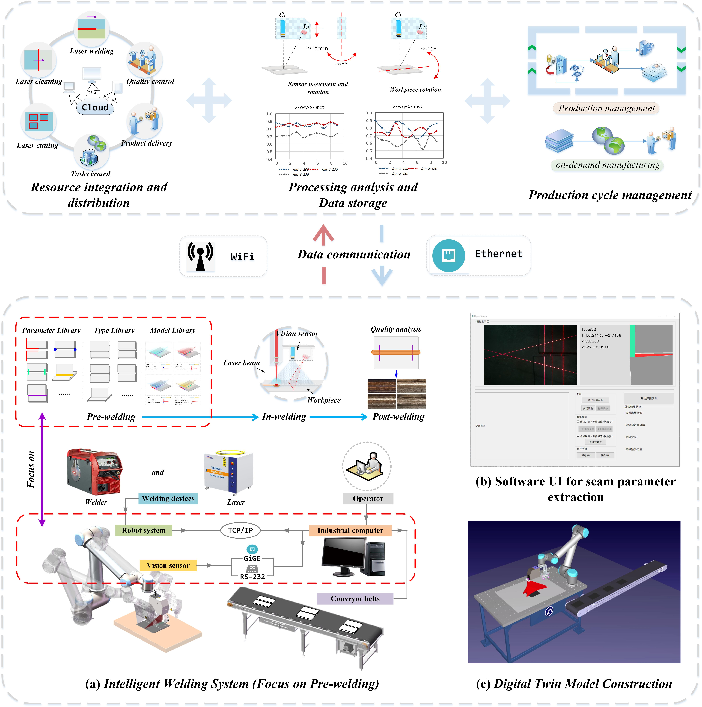
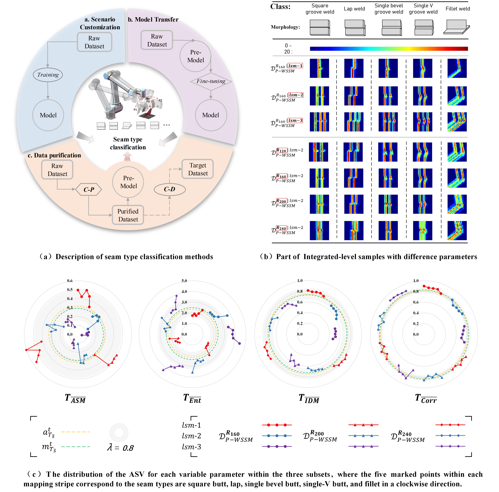

QUALIFICATIONS:
10/2022-10/2023 Visiting PhD Student in Mechanical Engineering, The University of Auckland, New Zealand.
09/2014-07/2018 Bachelor of Mechanical Engineering (Honours), Qingdao University of Science and Technology, China.
SIGNIFICANT DISTINCTIONS:
RESEARCH TOPICS:
REPRESENTATIVE PUBLICATIONS:
[1] (Accepted with minor revision) H. Liu, Y. Tian, Y. Lu, J. Feng, T. Wang, L. Li, & M. Jiang. A systematic framework for tackling anomalous pre-welding workpiece postures with regular butt joints based on prototype features. Journal of Manufacturing Systems. (CiteScore:16.0, Impact Factor:12.1, JCR: Q1. )[2] H. Liu, Y. Tian, L. Li, Y. Lu, J. Feng, & F. Xi, (2023). Full-cycle data purification strategy for multi-type weld seam classification with few-shot learning. Computers in Industry, 150, 103939. (CiteScore:21.1, Impact Factor:10.0, JCR: Q1), Doi: 10.1016/j.compind.2023.103939.
[3] H. Liu, Y. Tian, L. Li, Y. Lu, & F. Xi, (2023). One-shot, integrated positioning for welding initial points via co-mapping of cross and parallel stripes. Robotics and Computer-Integrated Manufacturing, 84, 102602.(CiteScore:20.1, Impact Factor:10.4, JCR: Q1), Doi: 10.1016/j.rcim.2023.102602.
[4] Y. Tian, H. Liu, L. Li, G. Yuan, J. Feng, Y. Chen, & W. Wang, (2020). Automatic identification of multi-type weld seam based on vision sensor with silhouette-mapping. IEEE Sensors Journal, 21(4), 5402-5412. (CiteScore:7.0, Impact Factor:4.3, JCR: Q1), Doi: 10.1109/JSEN.2020.3034382.
[5] Y. Tian, H. Liu, L. Li, W. Wang, J. Feng, F. Xi, & G. Yuan, (2020). Robust identification of weld seam based on region of interest operation. Advances in Manufacturing, 8, 473-485. (CiteScore:7.1, Impact Factor:5.2, JCR: Q2), Doi: 10.1007/s40436-020-00325-y.
PROJECT CONTRIBUTION:
[1] Key Technology Research and Demonstration Line Construction of Advanced Laser Intelligent Manufacturing Equipment from Shanghai Lingang Area Development Administration. (Pre-welding system development)[2] Intelligent scoring platform development based on image processing in robotics teaching. (Target feature segmentation and statistics)
[3] Terrazzo Grain Feature Extraction and Analysis System. (Grain feature extraction and analysis)
Research Statement:
I. (On going) Data integration and analysis system for pre-welding.

We are working on building a data integration and analytics system to sever robotic welding digital transformation. The system is expected to be able to integrate laser cutting, laser cleaning and laser welding, and provide full-cycle production management. Collecting and analyzing production data to optimize production processes and improve product quality. In this process, the purified data is uploaded to the cloud for process monitoring and provides a platform for online cloud manufacturing.
At present, we are focusing on the pre-welding data integration in intelligent welding system. Three key libraries related to welding workpiece including parameter library, type library and model library are constructed. Several main works involving type recognition, initial point positioning, workpiece posture checking and trajectory recognition has been completed for several common seam types. Industrial software and digital twin models are built to collect data and monitor processes in real-time.
II. Multiple seam types classification for intelligent integrated manufacturing.


This study [2] achieves a competitive multiple seam types classification result with flexible generalization, and provides a cost-effective solution for few-shot learning landed to more industrial scenarios. Two representative scenarios are as follows: Scenario S1 is an integrated welding workpiece with multiple seam types corresponding to different process requirements; Scenario S2 is a production line for the development of a large-scale welding process involving different seam types.
Also, we proposed a silhouette-mapping approach by laser spot in [5], which has a large mapping area compared with laser stripe. This mapping pattern can still maintain feature stable in scenes with multiple disturbing sources or complex seam profiles. Sufficient amount of laser spot feature images are fed into a constructed CNN model and a total of 97.6% of weld seam types were correctly identification.
[2] H. Liu, Y. Tian, L. Li, Y. Lu, J. Feng, & F. Xi, (2023). Full-cycle data purification strategy for multi-type weld seam classification with few-shot learning. Computers in Industry, 150, 103939. Doi: 10.1016/j.compind.2023.103939.
[4] Y. Tian, H. Liu, L. Li, G. Yuan, J. Feng, Y. Chen, & W. Wang, (2020). Automatic identification of multi-type weld seam based on vision sensor with silhouette-mapping. IEEE Sensors Journal, 21(4), 5402-5412. Doi: 10.1109/JSEN.2020.3034382.
III. Integrated vision sensor development and welding initial point positioning.

This study [3] serves the positioning of the welding initial point for different seam types under the development of large-scale welding processes. Here, four typical seam types were integrated into a self-developed integrated vision sensor for the welding initial point positioning. With the co-mapping of cross and parallel stripes, the welding initial point can be positioned into a one-shot operation via a controllable laser projector, which improves positioning efficiency and robustness, while resisting interference from external light changes.
[3] H. Liu, Y. Tian, L. Li, Y. Lu, & F. Xi, (2023). One-shot, integrated positioning for welding initial points via co-mapping of cross and parallel stripes. Robotics and Computer-Integrated Manufacturing, 84, 102602. Doi: 10.1016/j.rcim.2023.102602.
IV. Welding path identification and laser fabrication processes.

A robust identification method of weld seam based on region of interest operation is proposed in [4]. Three common welding paths involving straight-line, saw-tooth, curve, are identified based on the ROI iteration, which achieves an identification error of within two pixels. This study serves to automatic weld trajectory identification without human intervention.
Also, I have some good experience with laser welding processes (b) and laser additive/cladding (c) learnt in the actual factories.
[5] Y. Tian, H. Liu, L. Li, W. Wang, J. Feng, F. Xi, & G. Yuan, (2020). Robust identification of weld seam based on region of interest operation. Advances in Manufacturing, 8, 473-485. Doi: 10.1007/s40436-020-00325-y.